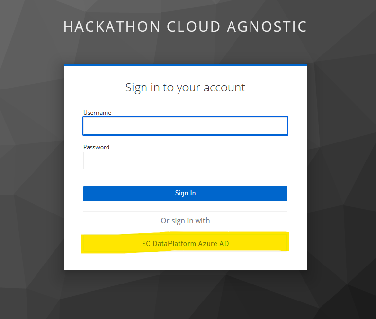

Cloud agnostic datalab#
The Cloud Agnostic Datalab is a web service to easily deploy and use containerized data science services like JupyterLab, Rstudio, Spark, Superset and PostgreSQL. It is the main service provided for the hackathon.

Typical use case
It can be used if you want to read data from S3 buckets (with programmatic access) and do some data processing with R/Python/Spark and finally you can create a specific data view, push it to PostgreSQL database and create a custom dashboard with Superset.
The Cloud Agnostic Datalab is available under this address: https://portal.agnostic.hackathon.ecdp.tech.ec.europa.eu
Login#
For access to the service you have to click on the EC DataPlatform Azure AD.

There you have to use the provided Azure AD login credentials which you received previously and activated with MFA.

For the first time login you have to enter your private email address that is used in MS Teams.
Home#
After successful login you arrive at the home screen of the Cloud Agnostic Datalab.

Here you can find a link to this documentation and the terms of use of these services. Please read it at least once, because by using these services you agree those terms.
My Account#
Under the My Account you find your Azure AD identifier, your name, your email which is used in the MS Teams group and where you receive the information about your Azure AD account activation. In addition, you will find here the use of resources for your Data Science Lab (DSL) available for your group. Each team have 128 vCPU and 512 GB RAM.

Service Catalog#
Under the Service Catalog you find the available services you can launch.

You can choose from the following services:
Apache Superset v1.5.1
For the Superset configuration you have to provide:
the name
if it is shared or private
the DSL of your group - there is only one possibility for your group
you have to select the configuration - the Micro, Small, Medium, Large give you predefined resources, with the Custom you can change some of them if the presets do not work for you (make sure to include the resource units -
mfor CPU &Mifor memory)you have to provide an admin username
you have to provide an admin email, first name and last name
you can provide a Mapbox API token, for that you have register a Mapbox account and create a public token (starting with ‘pk.eyxxxxxxx’) to enter in the Superset configuration
Jupyterlab (Spark) v3.4.3
For the Jupyterlab (Spark) configuration you have to provide:
the name
if it is shared or private
the DSL of your group - there is only one possibility for your group
you have to select the configuration - the Micro, Small, Medium, Large give you predefined resources, with the Custom you can change some of them if the presets do not work for you (make sure to include the resource units -
mfor CPU &Mifor memory)you have to select the storage (NFS PVC name) - there is only one possibility for your group
spark-submit v3.2.1 Using Scala v2.12.15, OpenJDK 64-Bit Server VM, 11.0.15
Python v3.10.4 with pre-installed Python packages: alembic, altair, anyio, argon2-cffi, argon2-cffi-bindings, asttokens, async-generator, attrs, Babel, backcall, backports.functools-lru-, beautifulsoup4, bleach, blinker, bokeh, Bottleneck, brotlipy, cached-property, certifi, certipy, cffi, charset-normalizer, click, cloudpickle, colorama, conda, conda-package-handling, cryptography, cycler, Cython, cytoolz, dask, debugpy, decorator, defusedxml, dill, distributed, entrypoints, executing, fastjsonschema, findspark, flit_core, fonttools, fsspec, gitdb, GitPython, gmpy2, greenlet, h5py, HeapDict, idna, imagecodecs, imageio, importlib-metadata, importlib-resources, ipykernel, ipympl, ipyparallel, ipython, ipython-genutils, ipywidgets, jedi, Jinja2, joblib, json5, jsonschema, jupyter-client, jupyter-core, jupyter-server, jupyter-server-mathjax, jupyter-telemetry, jupyterhub, jupyterlab, jupyterlab-git, jupyterlab-github, jupyterlab-pygments, jupyterlab-server, jupyterlab-widgets, kiwisolver, libmambapy, llvmlite, locket, lz4, Mako, mamba, MarkupSafe, matplotlib, matplotlib-inline, metakernel, mistune, mpmath, msgpack, munkres, nbclassic, nbclient, nbconvert, nbdime, nbformat, nest-asyncio, networkx, notebook, notebook-shim, numba, numexpr, numpy, oauthlib, packaging, pamela, pandas, pandocfilters, parso, partd, patsy, pexpect, pickleshare, Pillow, pip, portalocker, prometheus-client, prompt-toolkit, protobuf, psutil, ptyprocess, pure-eval, pyarrow, pycosat, pycparser, pycurl, Pygments, PyJWT, pyOpenSSL, pyparsing, pyrsistent, PySocks, pyspark, python-dateutil, python-json-logger, pytz, PyWavelets, PyYAML, pyzmq, requests, ruamel.yaml, ruamel.yaml.clib, ruamel-yaml-conda, scikit-image, scikit-learn, scipy, seaborn, Send2Trash, setuptools, six, smmap, sniffio, sortedcontainers, soupsieve, spylon, spylon-kernel, SQLAlchemy, stack-data, statsmodels, sympy, tables, tblib, terminado, threadpoolctl, tifffile, tinycss2, toolz, tornado, tqdm, traitlets, typing_extensions, unicodedata2, urllib3, wcwidth, webencodings, websocket-client, wheel, widgetsnbextension, xlrd, zict, zipp
R v4.1.3 with pre-installed R packages: SparkR, askpass, assertthat, backports, base, base64enc, bitops, blob, brio, callr, cli, codetools, colorspace, compiler, config, crayon, curl, datasets, DBI, dbplyr, desc, diffobj, digest, dplyr, ellipsis, evaluate, fansi, farver, fastmap, forge, generics, ggplot2, globals, glue, graphics, grDevices, grid, gtable, htmltools, htmlwidgets, httr, IRdisplay, IRkernel, isoband, jsonlite, labeling, lattice, lifecycle, magrittr, MASS, Matrix, methods, mgcv, mime, munsell, nlme, openssl, parallel, pbdZMQ, pillar, pkgconfig, pkgload, praise, processx, ps, purrr, r2d3, R6, rappdirs, RColorBrewer, Rcpp, RCurl, rematch2, repr, rjson, rlang, rprojroot, rstudioapi, scales, sparklyr, splines, stats, stats4, stringi, stringr, sys, tcltk, testthat, tibble, tidyr, tidyselect, tools, utf8, utils, uuid, vctrs, viridisLite, waldo, withr, xml2, yaml
Jupyterlab v3.2.8
For the Jupyterlab configuration you have to provide:
the name
if it is shared or private
the DSL of your group - there is only one possibility for your group
you have to select the configuration - the Micro, Small, Medium, Large give you predefined resources, with the Custom you can change some of them if the presets do not work for you (make sure to include the resource units -
mfor CPU &Mifor memory)you have to select the storage (NFS PVC name) - there is only one possibility for your group
Python v3.9.7 with pre-installed Python packages: alembic, altair, anyio, argon2-cffi, argon2-cffi-bindings, asttokens, async-generator, attrs, Babel, backcall, backports.functools-lru-cache, beautifulsoup4, black, bleach, blinker, bokeh, Bottleneck, brotlipy, cached-property, certifi, certipy, cffi, charset-normalizer, click, cloudpickle, colorama, conda, conda-package-handling, cryptography, cycler, Cython, cytoolz, dask, dataclasses, debugpy, decorator, defusedxml, dill, distributed, entrypoints, executing, flit_core, fonttools, fsspec, gmpy2, greenlet, h5py, HeapDict, idna, imagecodecs, imageio, importlib-metadata, importlib-resources, ipykernel, ipympl, ipython, ipython-genutils, ipywidgets, jedi, Jinja2, joblib, json5, jsonschema, jupyter-client, jupyter-core, jupyter-server, jupyter-telemetry, jupyterhub, jupyterlab, jupyterlab-pygments, jupyterlab-server, jupyterlab-widgets, kiwisolver, libmambapy, llvmlite, locket, Mako, mamba, MarkupSafe, matplotlib, matplotlib-inline, mistune, mpmath, msgpack, munkres, mypy-extensions, nbclassic, nbclient, nbconvert, nbformat, nest-asyncio, networkx, notebook, numba, numexpr, numpy, oauthlib, packaging, pamela, pandas, pandocfilters, parso, partd, pathspec, patsy, pexpect, pickleshare, Pillow, pip, platformdirs, prometheus-client, prompt-toolkit, protobuf, psutil, ptyprocess, pure-eval, pycosat, pycparser, pycurl, Pygments, PyJWT, pyOpenSSL, pyparsing, pyrsistent, PySocks, python-dateutil, python-json-logger, pytz, pytz-deprecation-shim, PyWavelets, PyYAML, pyzmq, requests, rpy2, ruamel.yaml, ruamel.yaml.clib, ruamel-yaml-conda, scikit-image, scikit-learn, scipy, seaborn, Send2Trash, setuptools, simplegeneric, six, sniffio, sortedcontainers, soupsieve, SQLAlchemy, stack-data, statsmodels, sympy, tables, tblib, terminado, testpath, threadpoolctl, tifffile, tomli, toolz, tornado, tqdm, traitlets, typed-ast, typing_extensions, tzdata, tzlocal, unicodedata2, urllib3, wcwidth, webencodings, websocket-client, wheel, widgetsnbextension, xlrd, zict, zipp
R v4.1.2 with pre-installed R packages: askpass, assertthat, backports, base, base64enc, bit, bit64, bitops, blob, brew, brio, broom, bslib, cachem, callr, caret, cellranger, class, cli, clipr, codetools, colorspace, commonmark, compiler, conflicted, covr, cpp11, crayon, credentials, crosstalk, curl, data.table, datasets, DBI, dbplyr, desc, devtools, dials, DiceDesign, diffobj, digest, dplyr, DT, dtplyr, e1071, ellipsis, evaluate, fansi, farver, fastmap, fontawesome, forcats, foreach, forecast, fracdiff, fs, furrr, future, future.apply, gargle, generics, gert, ggplot2, gh, git2r, gitcreds, globals, glue, googledrive, googlesheets4, gower, GPfit, graphics, grDevices, grid, gtable, hardhat, haven, hexbin, highr, hms, htmltools, htmlwidgets, httpuv, httr, ids, infer, ini, ipred, IRdisplay, IRkernel, isoband, iterators, jquerylib, jsonlite, KernSmooth, knitr, labeling, later, lattice, lava, lazyeval, lhs, lifecycle, listenv, lmtest, lubridate, magrittr, MASS, Matrix, memoise, methods, mgcv, mime, modeldata, ModelMetrics, modelr, munsell, nlme, nnet, numDeriv, nycflights13, openssl, parallel, parallelly, parsnip, patchwork, pbdZMQ, pillar, pkgbuild, pkgconfig, pkgload, plogr, plyr, praise, prettyunits, pROC, processx, prodlim, progress, progressr, promises, proxy, ps, purrr, quadprog, quantmod, R6, randomForest, rappdirs, rcmdcheck, RColorBrewer, Rcpp, RcppArmadillo, RCurl, readr, readxl, recipes, rematch, rematch2, remotes, repr, reprex, reshape2, rex, rlang, rmarkdown, RODBC, roxygen2, rpart, rprojroot, rsample, RSQLite, rstudioapi, rversions, rvest, sass, scales, selectr, sessioninfo, shiny, slider, sourcetools, splines, SQUAREM, stats, stats4, stringi, stringr, survival, sys, tcltk, testthat, tibble, tidymodels, tidyr, tidyselect, tidyverse, timeDate, tinytex, tools, tseries, TTR, tune, tzdb, urca, usethis, utf8, utils, uuid, vctrs, viridisLite, vroom, waldo, warp, whisker, withr, workflows, workflowsets, xfun, xml2, xopen, xtable, xts, yaml, yardstick, zip, zoo
Julia v1.7.1 with pre-installed packages: HDF5, IJulia
PgAdmin v6.8
For the PgAdmin configuration you have to provide:
the name
if it is shared or private
the DSL of your group - there is only one possibility for your group
you have to select the configuration - the Micro, Small, Medium, Large give you predefined resources, with the Custom you can change some of them if the presets do not work for you (make sure to include the resource units -
mfor CPU &Mifor memory)you have to provide an admin email
PostgreSQL v14.2.0
For the PostgreSQL configuration you have to provide:
the name
if it is shared or private
the DSL of your group - there is only one possibility for your group
you have to select the configuration - the Micro, Small, Medium, Large give you predefined resources, with the Custom you can change some of them if the presets do not work for you (make sure to include the resource units -
mfor CPU &Mifor memory)the default username and database name is
postgres
RStudio v4.2.2
For the RStudio configuration you have to provide:
the name
if it is shared or private
the DSL of your group - there is only one possibility for your group
you have to select the configuration - the Micro, Small, Medium, Large give you predefined resources, with the Custom you can change some of them if the presets do not work for you (make sure to include the resource units -
mfor CPU &Mifor memory)you have to select the storage (NFS PVC name) - there is only one possibility for your group
the list of pre-installed packages: abind, askpass, assertthat, aws.s3, aws.signature, backports, base64enc, bibtex, bit, bit64, blob, brew, broom, bslib, cachem, callr, cellranger, classInt, cli, clipr, colorspace, commonmark, config, countrycode, cpp11, crayon, crosstalk, curl, data.table, DBI, dbplyr, dichromat, digest, docopt, dplyr, dtplyr, e1071, ellipsis, eurostat, evaluate, fansi, farver, fastmap, fontawesome, forcats, forge, fs, gargle, generics, geojsonsf, geometries, ggplot2, giscoR, globals, glue, googledrive, googlesheets4, gridExtra, gtable, haven, here, highr, hms, htmltools, htmlwidgets, httpuv, httr, ids, isoband, jquerylib, jsonify, jsonlite, knitr, labeling, later, lazyeval, leafem, leaflet, leaflet.providers, leafpop, leafsync, lifecycle, littler, lubridate, lwgeom, magrittr, mapview, markdown, memoise, mime, modelr, munsell, openssl, pillar, pkgconfig, plogr, plyr, png, prettyunits, processx, progress, promises, proxy, ps, purrr, r2d3, R6, rapidjsonr, rappdirs, raster, RColorBrewer, Rcpp, readr, readxl, RefManageR, regions, rematch, rematch2, reprex, restatapi, rJava, RJDemetra, rjson, rlang, rmarkdown, RPostgres, rprojroot, rsdmx, rstudioapi, rvest, s2, sass, satellite, scales, selectr, servr, sf, sfheaders, shiny, shinydashboard, sourcetools, sp, sparklyr, stars, stringi, stringr, svglite, sys, systemfonts, terra, tibble, tidyr, tidyselect, tidyverse, timechange, tinytex, tmap, tmaptools, tzdb, units, utf8, uuid, vctrs, viridis, viridisLite, vroom, webshot, widgetframe, withr, wk, xfun, XML, xml2, xtable, yaml, base, boot, class, cluster, codetools, compiler, datasets, foreign, graphics, grDevices, grid, KernSmooth, lattice, MASS, Matrix, methods, mgcv, nlme, nnet, parallel, rpart, spatial, splines, stats, stats4, survival, tcltk, tools, utils
the default username is
rstudio
Apache Spark v3.2.1
For the Spark configuration you have to provide:
the name
if it is shared or private
the DSL of your group - there is only one possibility for your group
you have to select the configuration - the Small, Medium, Large give you predefined resources, with the Custom you can change some of them if the presets do not work for you (make sure to include the resource units -
mfor CPU &Mifor memory)you have to provide a username
My Services#
Under the My Services you will find the list of services you launched.
After the launch of a service it will have a status PENDING. A few minutes later refreshing the page the status should change to ACTIVE and the link to Open (or Copy for PostgreSQL) should show up in the last column.
Clicking on the Open button the webseite of the service will open in a new window.
Here you can also Terminate services, and PLEASE terminate those services which are not used to save energy and allow your teammate to use them if necessary.
My Data#
Under the My Data you will find the list of passwords/secrets created by the services you launched.

By clicking on the line of a service you can view, edit or copy to the clipboard the password of the service.

You can add also add additional secrets that you can use in the launched services.
Limitations#
The Cloud Agnostic Datalab has the following restrictions:
The deployment configuration cannot be changed after its launch
It is not possible to manually update an automatically generated secret at the instance deployment
Later changing the secret under My Data will not change the password for the launched service
Each service is provided with a specific service’s version
Don’t update services’ version manually/from the UI
No root access for JupyterLab and RStudio
Apache Superset does not able to connect to database if the browser is using incognito mode
Not all libraries are installed, some libraries can be installed by the user if it does not require root access
Simultaneous access to the shared service of RStudio is limited, only one person can be connected to it
The storage quota of the DSL is not validated against its limits